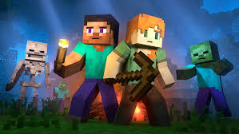

Sandbox games
The supplied guide compares Minecraft and Terraria through shared themes: open-ended play, procedurally generated worlds, crafting, exploration, combat, multiplayer and replayability.
12 / IMPACT · THE WORLD KEPT SPREADING
Minecraft didn’t stop at the edge of its world. It became a format for videos, streams, shared projects, communities and new kinds of creative play.
INFLUENCE, ONE FORMAT AT A TIME
These themes come from the source document’s overview of Minecraft’s influence on games and gaming culture.
The supplied guide compares Minecraft and Terraria through shared themes: open-ended play, procedurally generated worlds, crafting, exploration, combat, multiplayer and replayability.
Minecraft became a stage for tutorials, Let’s Plays, builds, challenges and series.
See the source creator list →Ongoing survival worlds, collaborative servers and live building make play a shared broadcast.
Maps, mods, resource packs, builds and custom game modes extend the world beyond one play-through.
Blocks, Creepers, Redstone and shared server stories have become familiar references across gaming culture.
The supplied source describes educational uses for coding, creative design, mathematics, collaboration and problem-solving.
THE GAME AS A STAGE
A world a player builds can become a video. A multiplayer server can become a role-play setting. A map can become a puzzle for the next visitor. The game’s tools let an idea travel from one player to many.
The supplied guide highlights Minecraft YouTubers, streamers, mods, maps, add-ons, creative builds, multiplayer and events as parts of its wider cultural reach.
Explore the community →
A CREATIVE TOOLBOX
Creative builds invite experimentation with materials, space and design ideas.
The source guide points to Redstone, commands, datapacks and other technical systems players can explore.
Multiplayer building, survival and role-play make coordination part of the experience.
“It starts as a block. It becomes a plan. Then it belongs to everyone who joins in.”
THE LAST BLOCK IS ANOTHER FIRST
The world already has a history, a community and a million ways to play. The next creative idea can still be yours.
COMPLETE ORIGINAL CHAPTERS
These expandable chapters preserve the supplied Minecraft document original information, examples, lists and conclusions. Open a chapter, then any section within it.
Source note: Text below is transcribed from the supplied project document and has not been fact-checked as current game guidance. Version-specific or speculative statements remain in their original context.
Minecraft has had a major impact on the gaming industry since its release. Its open-ended gameplay showed that a game could become successful without following a fixed story or giving players a single way to play. Minecraft also influenced other games, content creation, YouTube, streaming, and online gaming communities.
Minecraft helped make the sandbox genre more popular by giving players a large amount of freedom.
Players could build, explore, survive, or simply create their own activities.
The game showed that creativity could be an important part of gameplay.
Other sandbox games have used similar ideas of open worlds and player freedom.
Procedurally generated worlds allow players to have different experiences each time.
Minecraft became one of the most important games in gaming-related YouTube content.
Creators made gameplay videos, challenges, tutorials, speedruns, and survival series.
Minecraft allowed creators to develop their own ideas instead of simply playing the game normally.
Famous creators helped introduce Minecraft to millions of viewers.
Minecraft videos became a major part of gaming culture on YouTube.
Minecraft also became popular on live-streaming platforms.
Streamers can play survival, multiplayer, challenges, and other activities live.
Viewers can interact with streamers while they play.
Multiplayer servers allow several creators and viewers to participate in shared experiences.
Minecraft's open-ended gameplay gives streamers many different types of content to create.
Minecraft showed how players themselves could become creators.
Players create maps, challenges, adventure worlds, and mini-games.
Mods and add-ons can introduce new gameplay ideas.
Resource packs and skins allow players to customize their experiences.
This player-created content has helped Minecraft remain interesting for many years.
Minecraft has become more than just a game and has influenced gaming culture around the world.
Minecraft has produced many popular trends, memes, and online communities.
Characters, mobs, and features from the game have become widely recognizable.
Minecraft content has brought together players, creators, builders, and gamers from different countries.
Its influence can be seen in videos, livestreams, communities, and other forms of online entertainment.
Minecraft's impact on gaming goes beyond its own gameplay. It helped popularize player freedom in sandbox games and became a major part of YouTube and streaming culture. By allowing players to create their own worlds, challenges, and content, Minecraft showed how a game could become a platform for creativity and entertainment.